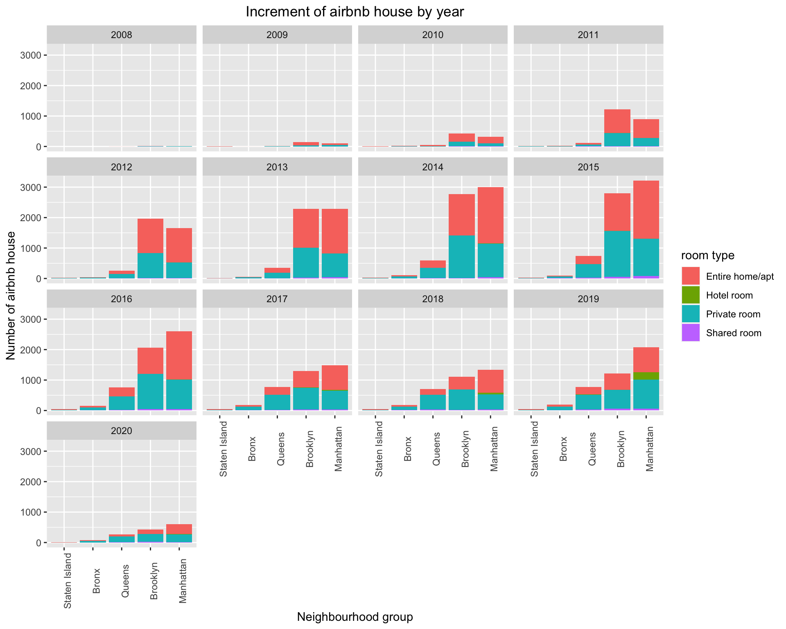
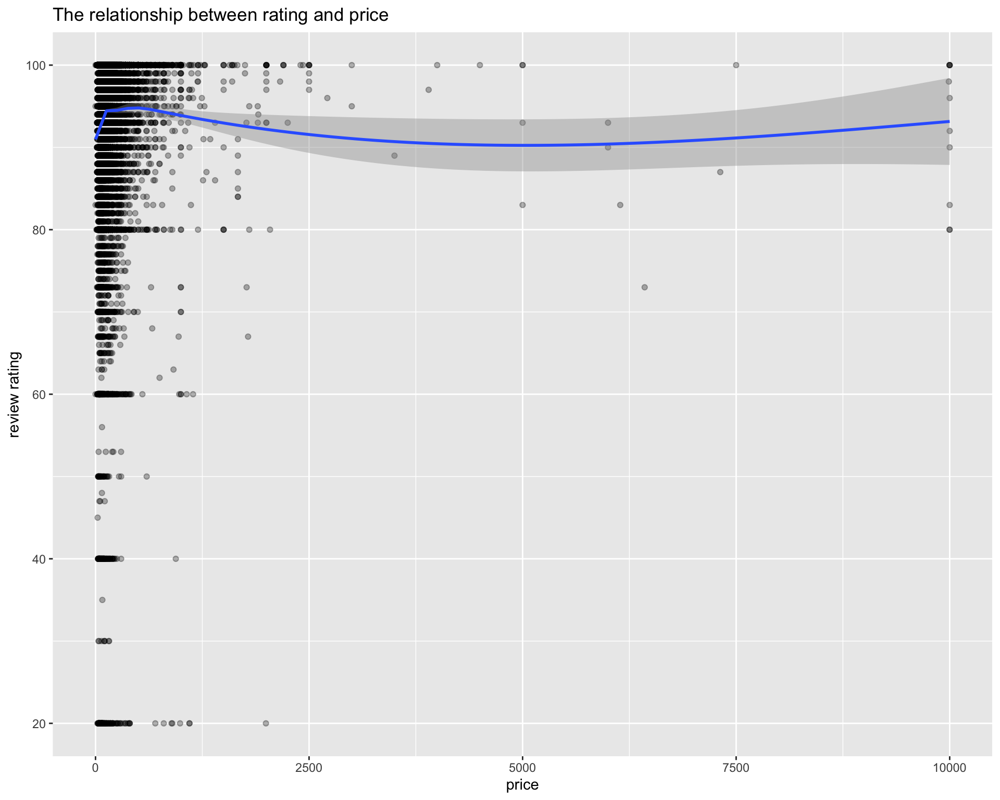
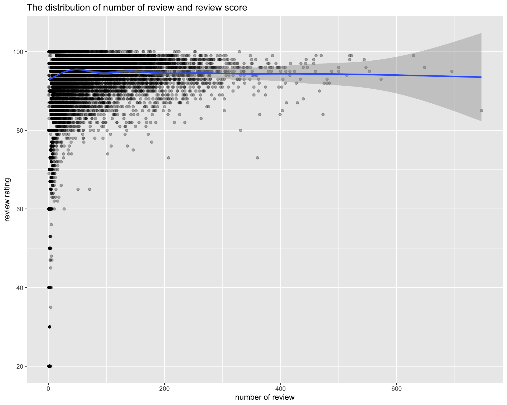
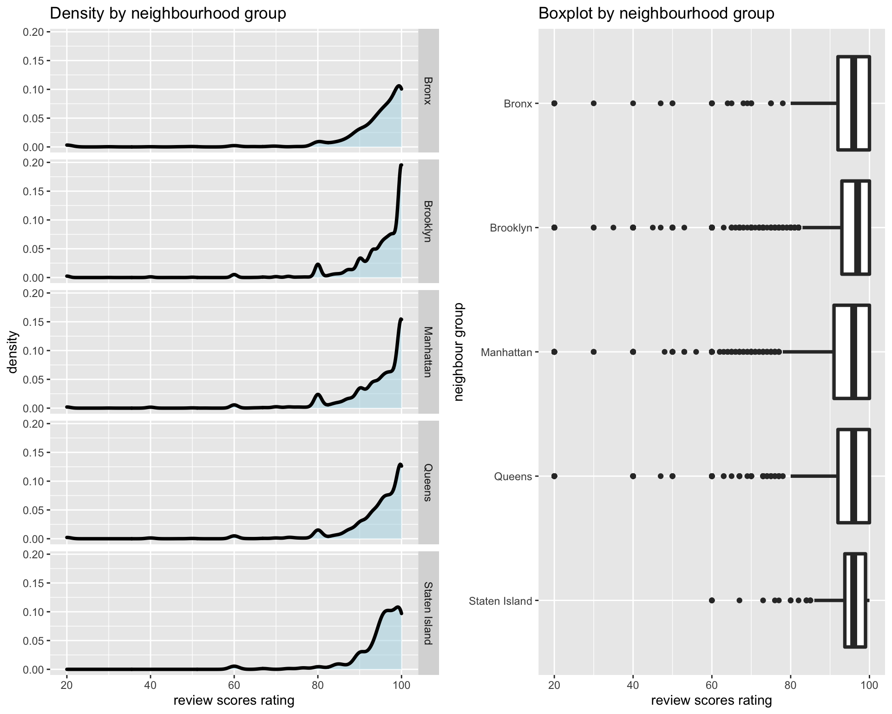
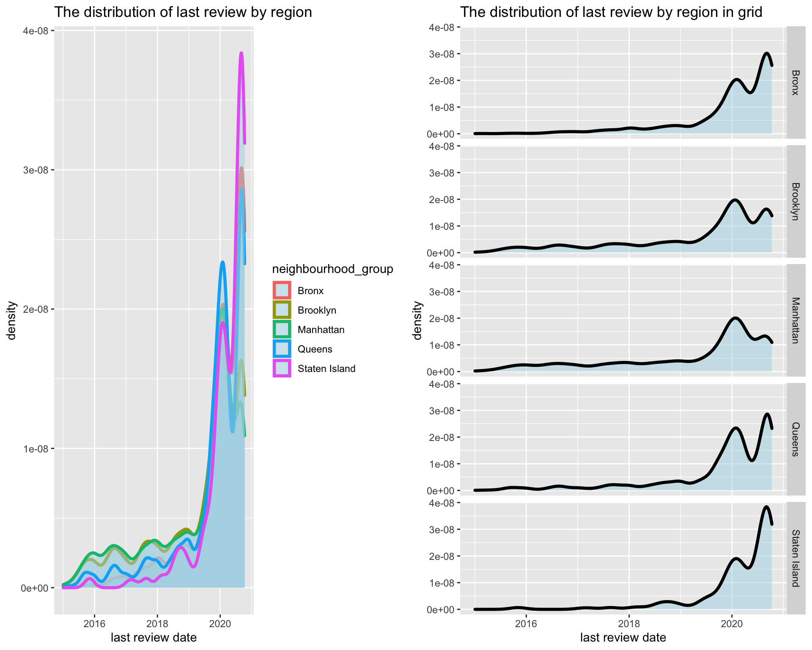
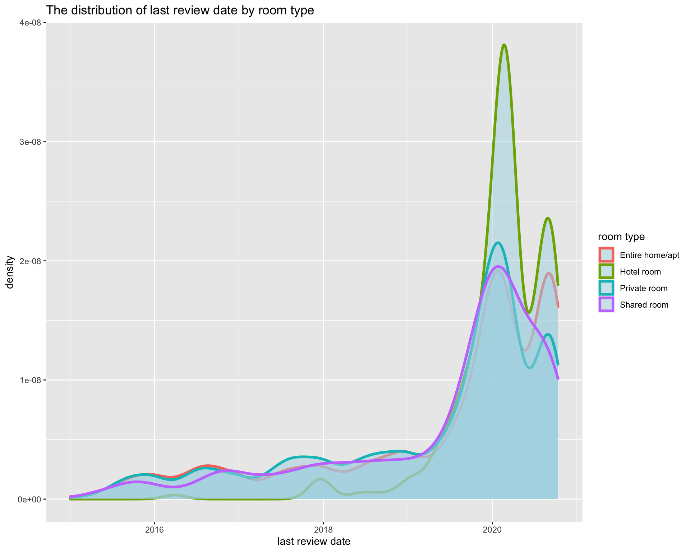

Chapter 5 Results to the Research Questions
5.1 Airbnb Development in New York City Over the Years
First, we have a current status analysis by a stack bar chart, from which we are willing to see the distribution of number of airbnb by neighbourhood group and room type. Accroding to chart, we have several discoveries shown below.
Manhattan and Brooklyn are the main regions where Airbnb’s residences are located, Bronx and Staten Island have a pretty low number of Airbnb properties.
Entire home/aptandPrivate roomare the main type of rooms, only Manhattan has theHotel roomas a category.

Moreover, as we can see from the geography graph, especially the shape of Manhatten, the map closely resembles a real map of NYC. We interpret this as the success of Airbnb as it illustrates how dense the Airbnb properties are. We can claim that almost every corner in Manhatten has at least one Airbnb listed property since we obviously can see the shape of Central Park and the shape of island.
Besides the current status analysis, we are more curious about the development of Airbnb houses in New York within the past years. We plot the number of new hosted Airbnb properties by year to observe the growth.

From the graph above, it is very clear to learn some growth pattern of Airbnb in New York City:
From 2008 to 2015, the increment number was increasing, especially in Brooklyn and Manhattan. This shows that Airbnb was growing rapidly in these years. From 2016 to 2019, the increment number had a sign to go down but remained stable during 2017-2019. Nevertheless, in 2020, the increment decreased dramatically and even there was no increment number in Staten Island, no doubt which was the consequence of Covid-19.
Entire home/aptandprivate roomare the majority of increment.Hotel roombegan to appear in 2018 but only in Manhattan, the reason we can guess is that some hotels foresighted the potential of Airbnb and put a part of room source on Airbnb to advertise so that they could attract more customers. It can be seen as a phenomenon of Airbnb’s high growth.
5.2 Features Influence Airbnb Properties’ Review Scores
It is widely acknowledged that the review score is a remarkable judgment standard for customers, just like the bad comments which host will try their best to avoid. Sometimes even if one house’s price is lower than another one, its lowest score will make customers have a decision to choose a more expensive one. It is necessary for us to find which feature is the one host should pay much attention to for getting a high review score for their listing(s).
Overview of Airbnb reviews:
From the treemap graph below, we can see that Brooklyn has the most number of reviews (darker color) although Manhattan has the most number of total Airbnb properties listed online (Larger area). We interpret this as properties in Brooklyn are more likely to have budget-friendly pricing. Thus, more tourists choose to stay in Brooklyn instead of Manhattan.
It is also worth mentioning that most reviews that we visualize in this research are from Manhattan or Brooklyn as it is shown in the treemap.

Next, we want to understand the distribution of review_scores, we find most scores are very high and even the mean score is above 90. However, there are a few small peaks under the mean level. This situation is within our expectation as most customers will give out high score ratings.

We selected a few features to visualize the relationship between them and review scores rating respectively.
Price is the first one into our consideration:

As we can see from the mosaic plot, more expensive properties tend to have slightly more excellent reviews and less poor reviews. However, we do not think the relationship is very significant. Furthermore, we can observe that most listings on Airbnb have reasonable prices(below $160 above $65) and their review scores are all good(from 92-100).
We ploted a scatter plot for further statistical analysis. 
We saw that there is almost no impact on review rating from price since the smooth line is just near a vertical line with high intercept. However, an oberservation is that when price goes up, the number of low rating decreases correspondingly.
Secondly, we want to see if the property types of Airbnb listings affect the overall review scores.
This mosaic shows that Airbnb’s listings posted online mostly consist of entire home/apt and private room. However, we still cannot observe any significant relationship between these two features.
Thirdly, we want to see whether the number of reviews has relationship with review score rating. Here review per month is not our choice since it has no ability to reveal the operation time of Airbnb’s house and will have positive bias for the ones just on service.

The trend is the same as previous graph that no clear relationship appears whereas the houses with high number of review definitely receive high ratings. From these observations, when customers is choosing airbnb house in New York City, the ones with high price and high number of review are more likely to be good choice. The difference in room types does not influence too much on customers’ experience. Of course, it is almost within our expectation and imagination, but the only restriction is whether customer can afford the price. Therefore, can we find other feature influencing review rating? For the continuous features, a correlogram is the most straight way to display the relationships.
The continous variables we choose are shown below:
HOUSE information: price, availability_365
HOST information: host_response_rate, host_acceptance_rate, host_listings_count
EVALUATION information: review_scores_rating

Unfortunately, all the continuous variables have low correlation values. Then we turn to the discrete variables, namely: neighbourhood_group, host_identity_verified, host_has_profile_pic
The first one is neighbourhood_group:

From the density graph, we can see the trend are almost the same except the staten island which has little bit lower density on high review score rating. However, it is not enough to say staten island influences score rating since there are less low score rating from boxplot and the uneven sample may be the reason causing the density trend difference.
For the host_identity_verified:

The density almost overlapped which is the strong evidence to show the low correlation.
The huge difference in the density line indicates that whether host has profile pic influence rating. From the graph, we can inform the host of airbnb house to upload profile pic since it will potentially influence your house rating.
To answer the question “Which features influence New York’s airbnb houses’ scores most”, houses with high price and high number of review are more likely to contribute to high scores. Moreoever, “host with profile pic” can also be an impact indicator.
5.3 How does the Covid-19 influence airbnb
Covid-19 influences a large number of industry this year and how it causes impact on airbnb in New York. First of all, we should find indicators which can reflect the condition under covid-19. Here, we think last review date can be seen as the activity level of airbnb house. If the last review date is close to date today, it can be somhow considered as active status. In order to have more clear visualization, we only extract the data which have last review date after 2015-01-01.
The most recent last review date is collected in 2020-10-11. In our expectation, if airbnb is popular or active in New York, the peak should happen 15 days - 1 month ealier than 2020-10-11, that is, 2020-8-11 to 2020-9-11 because reviews are most likely to appear during check-in or just few day after check-out. As we all know, airbnb app system will automatically remind you to fill review after check-out. In the graph, we can see there is a peak at 2020-09-09 which matches our expectation. However, the more important oberservation is that there is a more higher peak around 2020-01-22 and a valley bottom around 2020-05-26. It can be somewhat explained by covid-19 that covid-19 happened and spread throught New York at around early February, but news came to people’s ear first which may caused more people to check out. And with more serious are the situation of covid-19 in New York, much less people checked in airbnb house. Then with time going by, check-in number recovered gradually.
Of course, it is our first guess, we want to see the density of last review date from different dimensions. Here neighbourhood group and room type are into our consideration.

We can see for neighbourhood group, there are two peaks and one bottom but the level is different. If our first guess is correct, we can say the airbnb in Bronx and Manhattan influenced more since their first peak has higher density.

From room type visulization, we find entie home/apt, hotel room and private room have similiar trend as the overall trend, but for shared room, it has no second peak which may delivered a message that shared room still have no trend to recover under covid-19. Moreover, what about the density by room type and neighbourhood group.
From the grid graphs, the densities are more like the ones by room type. Especially for each neighbourhood group, last review date density of shared room show the similiar trend.
To answer the question that “how does covid-19 influence airbnb in New York”, we can say that Covid-19 made many customers check out at around mid Janurary causing lot of airbnb house idle which lasted for about 3-4 month. However, the situation became better at Aug-Sept for most room types. Shared room are continuing to be more idle. It is reasonable to get this conlcusion since shared room is easir to spread virus.